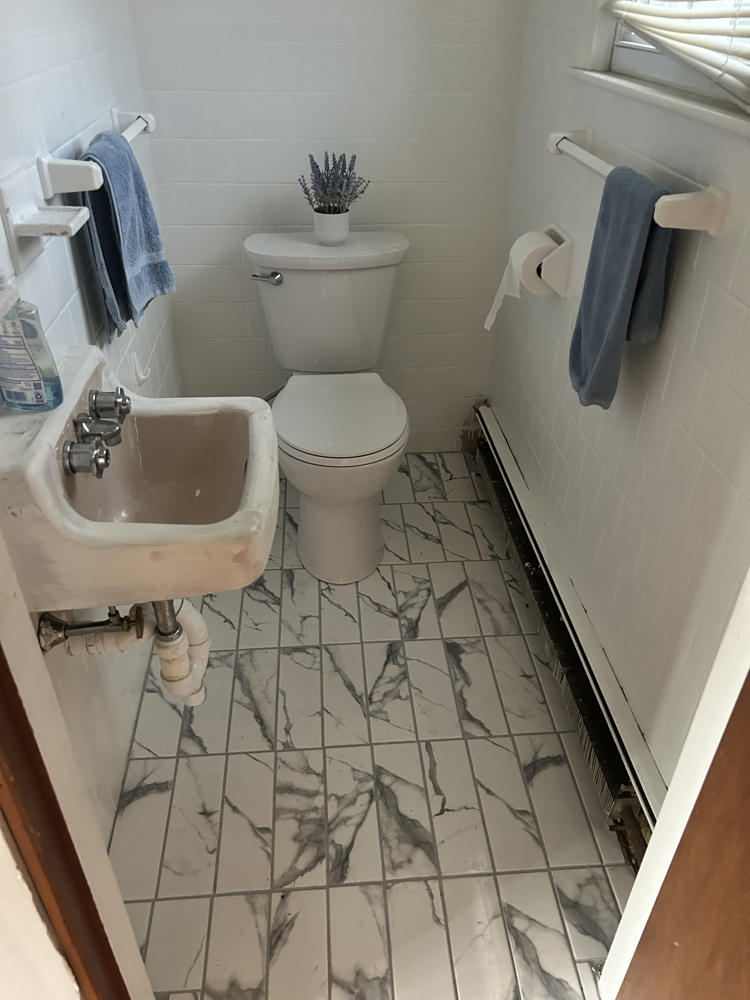
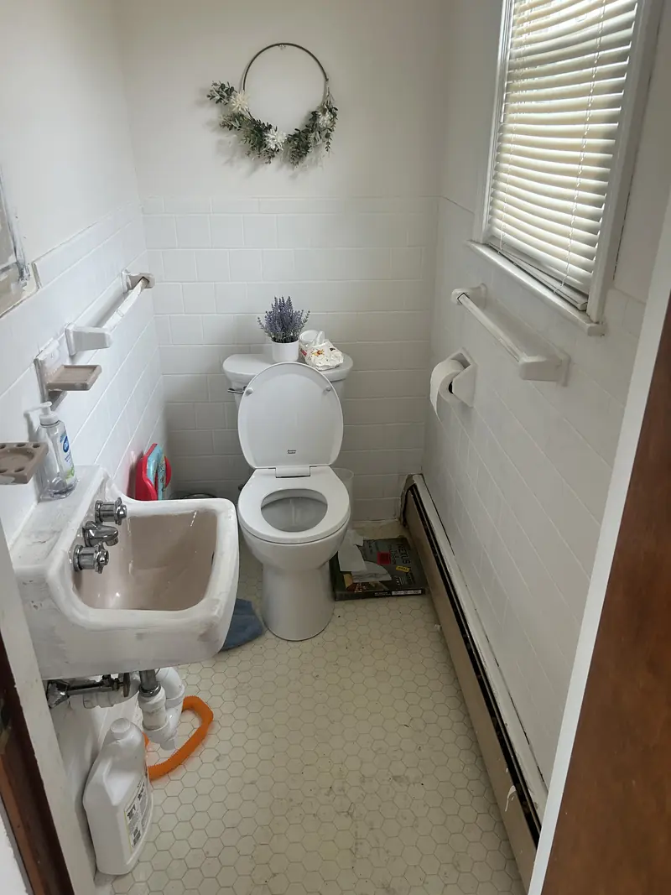
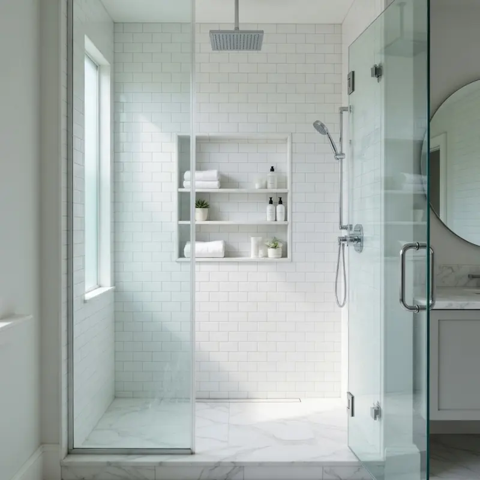
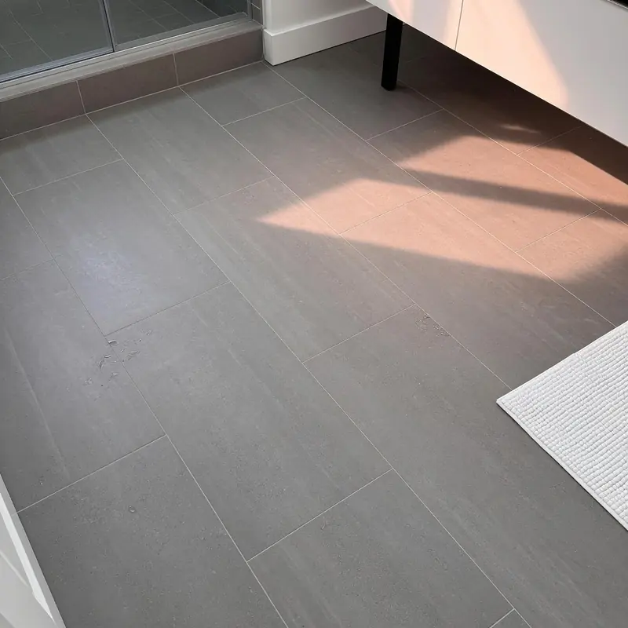

Do you waterproof wet areas before installing tile?
Yes. Wet walls and shower areas are prepared and waterproofed before finish tile is installed.
Bathroom tile
Shower surrounds, tub walls, floors, niches, and backsplashes, with wet areas waterproofed before tile goes on the wall.

Pretty tile does not matter if water gets behind it. We focus on the prep, waterproofing, slope, and layout before the finish tile.
Real bathroom tile work
Bathroom tile has to manage water and still land cleanly at tubs, walls, fixtures, and transitions. These are real Cook Flooring project photos.



The finished tile is only as dependable as the preparation beneath it.
Yes. Wet walls and shower areas are prepared and waterproofed before finish tile is installed.
We install bathroom floors, shower surrounds, tub walls, backsplashes, niches, benches, and trim details using porcelain, ceramic, and natural stone.